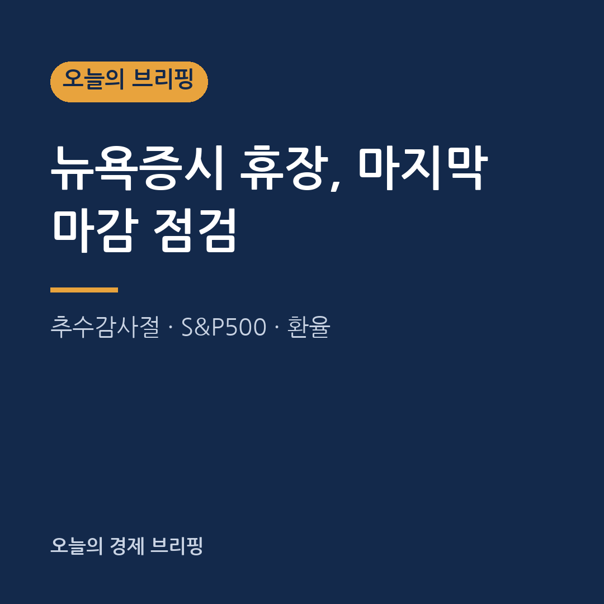
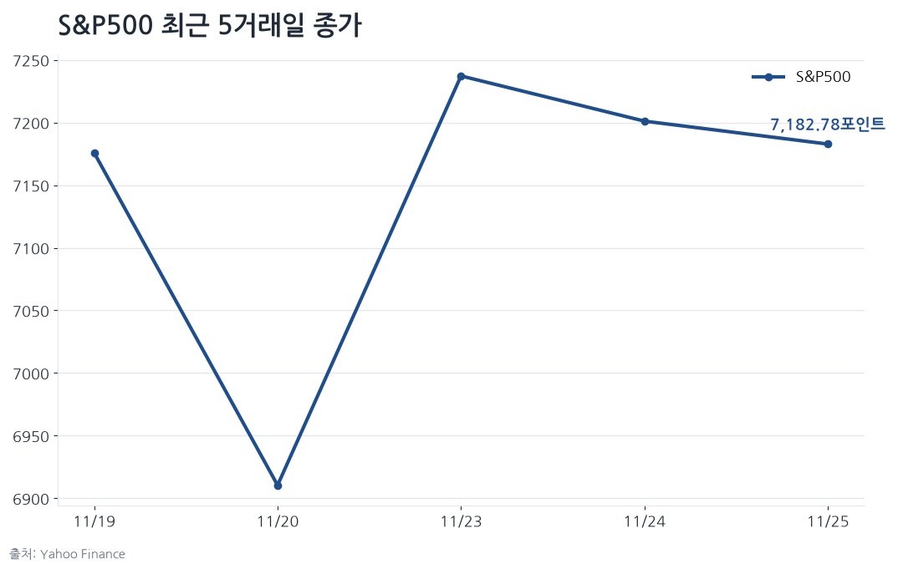

2026-11-27-0730-tistory 발행 키트 · 이 페이지는 검색에 노출되지 않습니다.
제목
카테고리
오늘의 브리핑태그
본문 (그림·표 포함)
휴대폰 블로그 앱에서는 그림이 같이 붙지 않을 수 있어요. 그때는 [글자만 복사] 후 아래 이미지를 저장해 [그래프1]·[표1] 자리에 첨부하세요.

핵심 요약: 미국 증시는 26일(현지시간) 추수감사절로 전면 휴장했으므로 새로운 마감 시세가 없습니다. 직전 거래일인 25일에는 다우가 올랐고 S&P500과 나스닥, 반도체지수는 내렸습니다.
▶ 배경: 휴장과 단축 거래 미국 증시는 추수감사절 당일에 열리지 않았고, 이튿날인 블랙프라이데이에는 단축 시간으로 운영됩니다. 한국시간으로는 28일 새벽 3시에 마감하는 일정으로 보도됐습니다.
따라서 오늘 아침 국내 투자자가 참고할 미국 지수는 25일 마감 기준입니다.
▶ 핵심 내용: 25일 마감 지수 다우존스 산업평균지수는 50,182.95로 0.33% 상승했습니다. S&P500은 0.25% 하락한 7,182.78, 나스닥은 0.62% 하락한 23,585.80이었습니다.
25일 미국 증시 마감 (현지시간)
| 지수 | 종가 | 전일 대비(%) |
|---|---|---|
| 다우 | 50,182.95 | +0.33 |
| S&P500 | 7,182.78 | -0.25 |
| 나스닥 | 23,585.80 | -0.62 |
| 필라델피아 반도체 | 8,774.86 | -0.65 |
출처: Yahoo Finance
필라델피아 반도체지수는 0.65% 내린 8,774.86으로 집계됐습니다. 나스닥은 장중 최대 4.6% 하락했다가 낙폭을 크게 줄여 마감한 것으로 전해졌습니다.
▶ 최근 5거래일 추이 S&P500은 20일 6,910.39로 내려앉았다가 23일 7,237.17까지 회복했고, 이후 24일 7,201.09, 25일 7,182.78로 소폭 밀렸습니다. 주 후반으로 갈수록 상승분을 일부 반납하는 모습입니다.

▶ 영향: 환율·금리·유가 미 국채 10년물 금리는 25일 4.85%로 전 거래일보다 내렸습니다. 원·달러 환율은 26일 1,343.42원, WTI 유가는 84.91달러로 0.06%와 1.47%씩 각각 올랐습니다.
환율·금리·유가
| 항목 | 기준일 | 수치 | 전일 대비(%) |
|---|---|---|---|
| 미 국채 10년물 금리 | 11/25 | 4.85% | -1.14 |
| 원·달러 환율 | 11/26 | 1,343.42원 | +0.06 |
| WTI 유가 | 11/26 | 84.91달러 | +1.47 |
출처: Yahoo Finance
▶ 휴장일 주요 소식 미국 동부에 폭풍이 불어 55만 곳이 정전되고 항공편 수백 편이 결항했다는 보도가 있었습니다. 기업 부문에서는 엔비디아의 첨단 AI 반도체를 대량 구매한 실리콘밸리 업체 두 곳이 중국 소유로 확인됐다는 소식이 전해졌습니다.
또 미국 의회가 중국산 부품을 쓴 자동차의 미국 내 판매를 금지하는 법안을 연내 처리하려 한다는 보도가 나왔습니다. 반도체·자동차 공급망 규제가 이어질 수 있다는 점에서 지켜볼 대목입니다.
▶ 확인할 점 첫째, 국내 증시는 미국 휴장 영향 없이 자체 수급과 환율로 움직일 가능성이 있습니다. 코스피는 26일 4,711.21로 0.29% 상승해 마감했습니다.
둘째, 28일 새벽 미국 단축 거래의 지수 방향을 확인해야 합니다. 셋째, 다음 달 4일 예정된 TSMC 애리조나 공장 기공식에 미국 대통령이 참석한다는 보도도 반도체 업황 점검에 참고할 수 있습니다.
▶ 정리 1. 미국 증시는 26일 휴장했고 최신 마감은 25일(다우 +0.33%, 나스닥 -0.62%)입니다. 2. 블랙프라이데이는 단축 거래이며 한국시간 28일 새벽 3시에 끝납니다. 3. 원·달러 환율 1,343.42원, 10년물 금리 4.85%, WTI 84.91달러를 함께 점검하세요.
이미지 (개별 복사·저장)
출처 (본문 맨 아래에 붙여넣기 권장)
- 뉴시안, 美증시 추수감사절 휴장·블랙프라이데이 단축거래 기사, https://news.google.com/rss/articles/CBMibEFVX3lxTFAzbDFpbW5nNHJqa1lmVWFkYzc1dllTZW9TZDF2MEp2ZkFPaXB5ZGxwMU0yWUpTdEpva3dEOE14b1ZLc29jTl9TZWI3c05sSzdUalVzYzZxdVNYelV6SXIwcnZEc1JtRENJeWZOTw?oc=5 - 강릉뉴스, 블랙프라이데이 단축거래 기사, https://news.google.com/rss/articles/CBMib0FVX3lxTFAwMUJDRkpGVUUzYUhINWh1eHFsR3JmVWs0S1owTDFRanlUYVh2amdYVEtzSUlwekp4NXJ2UDZkME15ZnJld2lIeTg1bWtsS0hiVVVJQUZ1X0hjM0RVelVpVkFjME10dzhNZVVwMFROQQ?oc=5 - 머니투데이, 나스닥 장중 낙폭과 마감 기사, https://news.google.com/rss/articles/CBMiaEFVX3lxTFBmdUlNc25tV2tTZ2tVa2tsQTJrNkZjUzFOdmN2MnhONllyR1RFajctdERLdGZjVXZubXlRX2RPTnRsVUxjdzBFLTdLaEhCUmEtTjBzWUlIcE5xeUZJcENsOENrT3JCSXFm0gFuQVVfeXFMTWRzY3ppTk5RSnA2X2xaUTZEeWQzYllQSnkyXzRtYVFsOE5femZweG00bUNhLXNfczdrRmdZZEVwTlVicGgzTnNoLXlkMnloLUhIenp6c0h6QjFPTzdmYXlTX01RSjJ2ZUwwWERpTEE?oc=5 - 연합뉴스, 추수감사절 폭풍 정전·결항 기사, https://www.yna.co.kr/view/AKR20261127001051072 - 연합뉴스, 엔비디아 칩 구매 업체 관련 기사, https://www.yna.co.kr/view/AKR20261127004500091 - 연합뉴스, 중국 자동차 규제 법안 관련 기사, https://www.yna.co.kr/view/AKR20261127010700071 - 연합뉴스, TSMC 애리조나 기공식 관련 기사, https://www.yna.co.kr/view/AKR20261127003800071 - 한국경제, 코스피 급등 관련 기사, https://www.hankyung.com/article/2026112632131 - 시세: Yahoo Finance